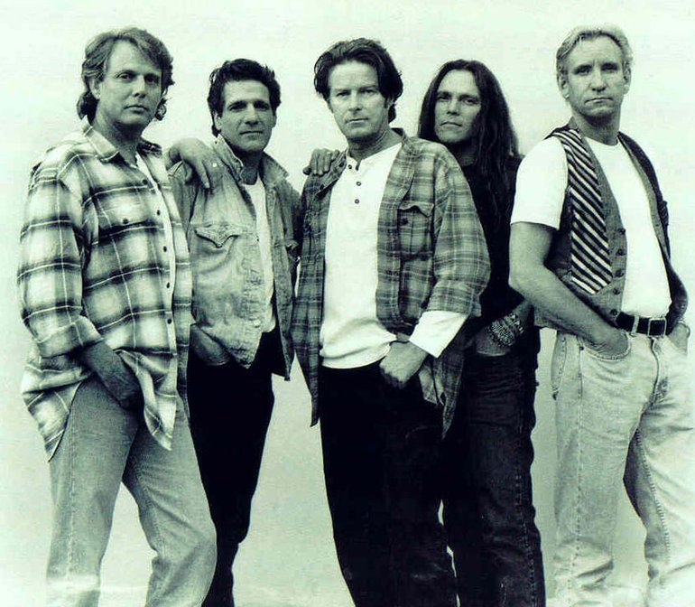

A Tribute to the Eagles
One of the Greatest Rock n Roll Bands
The Early Years - 1971 to 1980>

Left to Right: Glen Frey, Don Felder. Don Hendley, Joe Walsh. Timothy B. Schmidt
Left to Right: Glen Frey, Don Felder. Don Hendley, Joe Walsh. Timothy B. Schmidt